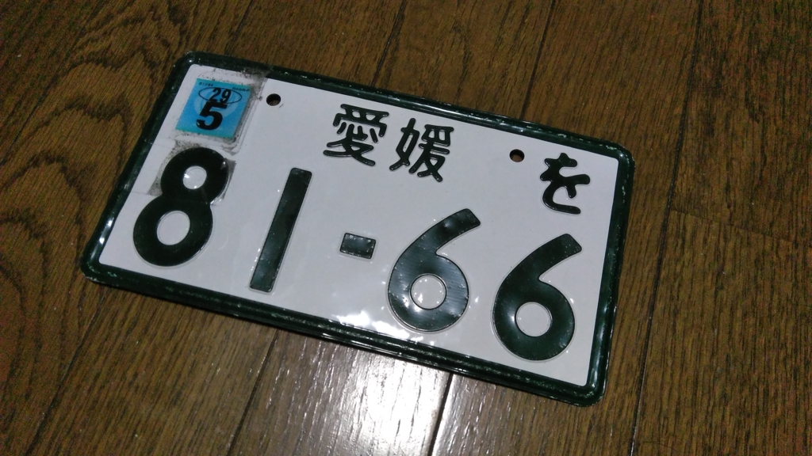
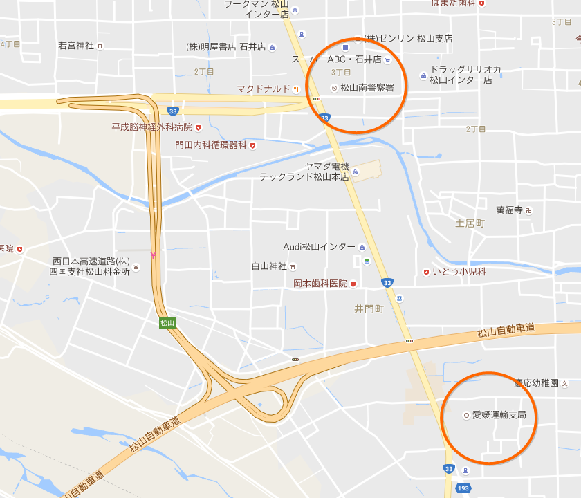
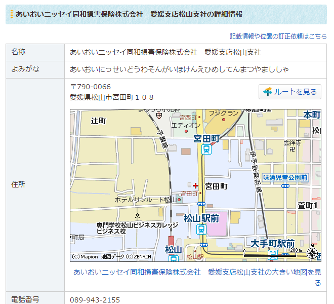

バイクのナンバープレートを落としたとき、人類はどのように対応すればよいのか
公開日：

この前バイクを買ったんだけど、BAS で受け取って家に帰る途中、ナンバープレートを脱落させました／(^o^)＼
ちゃんとネジを〆たつもりだったんだけど、L型2気筒エンジンの振動に耐えるには十分でなかったらしい。後続車の方、ほんまごめんなさい。なんか落ちた気はしたんだけど、クルマの流れの中、振り返って十分に確かめる余裕がなかった。
当たり前ですが、ナンバープレートのない状態で走行するのは違反です（五十万円以下の罰金）。
第二章 自動車の登録等
（自動車登録番号標の表示の義務）
第十九条 自動車は、第十一条第一項（同条第二項及び第十四条第二項において準用する場合を含む。）の規定により国土交通大臣又は第二十五条の自動車登録番号標交付代行者から交付を受けた自動車登録番号標を国土交通省令で定める位置に、かつ、被覆しないことその他当該自動車登録番号標に記載された自動車登録番号の識別に支障が生じないものとして国土交通省令で定める方法により表示しなければ、運行の用に供してはならない。
第八章 罰則
第百九条 次の各号のいずれかに該当する者は、五十万円以下の罰金に処する。
一 第十一条第一項（同条第二項及び第十四条第二項において準用する場合を含む。）、第十一条第四項若しくは第六項、第十九条、第二十条第四項、第五十四条の二第四項、第六十三条第六項、第七十三条第一項（第九十七条の三第二項において準用する場合を含む。）又は第九十八条第三項の規定に違反した者
ナンバープレートを再交付してもらいましょう。
1. 紛失届を出す
まずは最寄りの交番や警察署で紛失届を出しましょう。松山の場合は、陸運局に近い松山南警察署がいいかも。

警察のお世話になることはあまりないので知らなかったのですが、遺失物は会計課に相談すればいいみたいです。警官のおっちゃんを適当に捕まえて聞いたら、一瞬「なにを当たり前のこと聞いてんだクソが」みたいな顔をされましたが、丁寧に教えてもらえました。
紛失届を出すと何桁かのナンバーを教えてもらえるので、これをメモして陸運局へ。
2. ナンバープレートの再発行
陸運局にいったら、まず総合受付のようなところへ。書かなければならない書類一式がもらえます。ナンバープレートの紛失というケースは意外と少ないようで、ちょっとここで手間とりました。
書類をもらったら、見本をみながら頑張って必要事項を埋めましょう。
- 車検証：ナンバーやバイクの型番などを知るのに必要
- 印鑑：なくてもなんとかなったけど、あった方が面倒は少ない
などを前もって準備しておくとよいです。僕はここで書類を何回か書き損じて、受付のお姉さんに迷惑をかけてしまいました。死にたかった。この書類を書くときに、さきほどの紛失届のナンバーがあるととてもスムーズ。二度手間になるのは面倒なので、ぜひ先に紛失届を出しておきましょう。
書類を完成させて、先ほどの総合受付でチェックしてもらうと、どこをどういう順番で回ればいいかを書いた紙がもらえるので、その通りに手続きを勧めればあとはおっけー。ナンバープレートを受け取る際に確か600円ぐらいとられますので（ほかにもちょろちょろ支払う必要あり）、小銭があればいいかもしれませんな。
なお、ナンバープレートの番号は変わってしまうので注意。変えないで再発行してもらう手段もあるとかないとかですが、その日中とはいかないだろうと思います。任意保険の確認とかちょっと大変かも。うちはバイクを買ったばかりでまだ入ってなかったので助かった。
3. 自賠責ステッカーの再発行
最後に忘れてはいけないのが、自賠責ステッカーの再発行です。
（保険標章）
第九条の三 検査対象外軽自動車、原動機付自転車及び締約国登録自動車は、国土交通省令で定めるところにより、保険標章を表示しなければ、運行の用に供してはならない。罰則
第八十八条 次の各号のいずれかに該当する者は、三十万円以下の罰金に処する。
一 第八条又は第九条の三第一項若しくは第二項（第九条の五第三項及び第十条の二第四項において準用する場合を含む。）の規定に違反した者
もしかすると中型以上の車検が必要なバイクは貼らなくていいのかもですが（車検のないバイクは必須）、まぁ、あるに越したことはないでしょう。
再発行の手続きは簡単で、自動車損害賠償責任保険証明書をもって保険会社の窓口に行くだけです。僕の場合はあいおいニッセイ同和損害保険株式会社（なげぇ）だったので、JR 松山駅の近くにある営業所に行ってきました。

ほんま駅そばやな。2階に上がると受け付けがあるので、そこで証書を見せて書類を書くだけで代わりのステッカーがもらえました。お金もとられないようでなにより。
教訓
ネジはちゃんとしめる。
後日談
まさか紛失届を出したナンバープレートが帰ってくるとは思わなかった／(^o^)＼
もう不要だし処分してほしかったのですが、それはそれで困るみたいなのでちゃんと東警察署まで取りに行きました。
届けてくださった方、ありがとう。
クルマにいっぱい轢かれたみたいで、表面がモコモコしていますが、これはこれで味があるような気がしてきたので、記念に飾っとこうかなぁと思います。